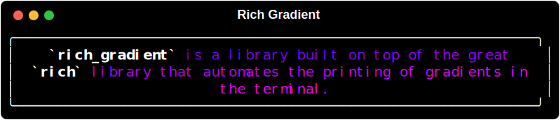

¶
¶

This library is a wrapper of the great rich library that extends rich.text.Text to allow for the easy generation gradient text from either user entered colors or randomly if no colors are entered.
Borrowing from pydantic-extra-types' Color class, rich_gradient extends the rich standard colors to include:
- 3 or 6 digit hex code (e.g.
#f00or#ff0000) - RGB color codes (e.g.
rgb(255, 0, 0)) - RGB tuples (e.g.
(255, 0, 0)) - CSS3 Color Names (e.g.
red)
Installation¶
uv (Recommended)¶
Pip¶
Usage¶
Basic Gradient Example¶
To print a simple gradient just substitue the Gradient class for the Text class in the rich library.
from rich.console import Console
from rich_gradient import Gradient
console = Console()
console.print(Gradient("Hello, World!")

Gradient with Specific Colors¶
If you want a bit more control of the gradient, you can specify the colors you want to use in the gradient by passing them as a list of colors to the colors parameter.
Color Formats¶
Color can be parsed from a variety of formats including:

Example Code¶
console.print(
Gradient(
"This a gradient with specific colors.",
colors=["red", "#ff9900", "#ff0", "Lime"],
justify="center"
)
)
Specific Color Gradient Result¶
Rainbow Gradient Example¶
If four colors isn't enough, you can use the 'rainbow' parameter to generate a rainbow gradient that spans the entire spectrum of colors randomly.

*The rainbow gradient is generated randomly each time the code is run.
Still inherits from rich.text.Text¶
Since Gradient is a subclass of Text, you can still use all the same methods and properties as you would with Text.